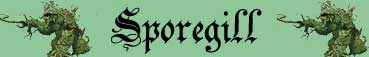

|
|
Climate/Terrain | Foreste |
| Frequency | Rare | |
| Organization | Solitary (più raramente piccolo gruppo) | |
| Activity Cycle | Any | |
| Diet | Carnivore | |
| Intelligence | Animal (1) | |
| Treasure | None | |
| Alignment | Neutral | |
| No. Appearing | 1d10: (1-7) 1 (8-10) 1d3+1 | |
| Armor Class | 5 | |
| Movement | 6 | |
| Hit Dice | 4 | |
| Thac0 | 16 | |
| No. of Attacks | Tocco (Venefico) | |
| Damage / Attacks | None | |
| Special Attacks | Tocco Velenoso, Nube di Spore | |
| Special Defenses | Resistenza a Freddo, Immunità al Veleno | |
| Special Weakness | Vulnerabilità al fuoco | |
| Magic Resistance | Nessuna | |
| Size | Medium | |
| Morale | Elite (14) | |
| XP value | 175 |
Descrizione
Lo Sporegill è un fungo vivente di medie dimensioni. Alto un metro e mezzo ha il cappello rosso a chiazze avorio. Nella parte frontale del cappello spunta un grosso baffo bianco che il fungo utilizza per attaccare le proprie vittime. Sopra il cappello, inoltre, spuntano due piccole protuberanze che rappresentano gli occhi della creatura.
Combat
Lo Sporegill non
è dotato di veri attacchi fisici. Questa creatura, infatti, attacca toccando con
il baffo vegetale frontale i propri nemici avvelenandoli con tale tocco.
TOCCO VENEFICO: Quando lo
Sporegill tocca una creatura con il suo baffo vegetale diffonde sulla stessa un
pericoloso veleno a contatto.
Piaga del Fungo Vivente: Onset
1 round,
Effetti
0/5,
Delay
none,
Tiro Salvezza
- 2,
Assuefazione
none.
NUBE DI SPORE:
In luogo di effettuare un normale attacco lo Sporegill, impiegando un'azione
complessa con fattore iniziativa pari a +3, è in grado di spargere una nube di
spore venefiche. Le spore si
cospargeranno in un'area sferica di
15 metri di diametro il cui centro
è corrispondente alla posizione dello Sporegill. Tutti coloro si trovano
nell'area d'effetto saranno colpiti dal seguente veleno gassoso a contatto:
Spore della Paralisi
: Onset
1 round,
Effetti
0/Paralizzato (Hold) per 3 rounds,
Delay
none,
Tiro Salvezza
0,
Assuefazione
4 rounds.
Una volta utilizzato questo
attacco speciale lo Sporegill non
potrà riutilizzarlo nei successivi 4 rounds
di combattimento.
RESISTENZA AL FREDDO: Il corpo
vegetale dello Sporegill è particolarmente resistente ai danni da freddo, per
tale motivo lo Sporegill subisce solo la
metà (per difetto) di tutti i danni da freddo
sia di natura magica che naturale provocati nei suoi confronti.
IMMUNITA' AL VELENO: Lo
Sporegill è immune agli effetti di qualsiasi tipologia di veleno.
VULNERABILITA' AL FUOCO: Il
corpo vegetale dello Sporegill è particolarmente sensibile ai danni da fuoco,
per tale motivo lo Sporegill subisce il 125% di tutti i danni da fuoco
(calcolato per eccesso) sia di natura magica
che naturale provocati nei suoi confronti.
Habitat/Society
Questi funghi sono creature solitarie che vagano nella foresta come predatori. Difficilmente lo Sporegill attaccherà creature di grandi dimensioni prediligendo creatura di taglia medium od inferiore. Meno frequentemente possono incontrarsi piccoli gruppi di questi funghi. Probabilmente questi piccoli assembramenti sono dettate dalla logica dell'accoppiamento.
Ecology
Una volta uccisa una creatura animale sarà il medesimo veleno dello Sporegill a sciogliere il suo corpo per permettere al fungo di cibarsene.
Mystical Resource Sourge (Baffo Vegetale) Quantità: 1, Presenza 33% - Effetto Particolare: Veleno - Qualità della Risorsa: Common.